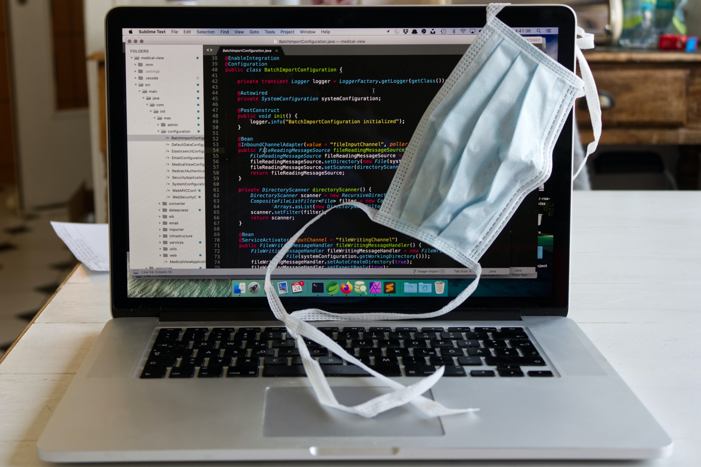

Vendedores ambulantes pasan de vender juguetes y medias a vender barbijos y alcohol en gel.

Vecinos de Nueva Córdoba y alrededores salen a sus balcones a aplaudir a los profesionales de la salud.

Moldes para hacer tus propios tapabocas: todos los tamaños.

Tips para trabajar desde casa: las empresas buscan implementar el Work From Home.

Estudios científicos demuestran que la actividad física se ha reducido en un 40% desde la pandemia.
Las universidades y empresas buscan estar comunicados a través de la plataforma del momento: Zoom.